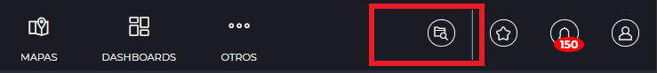
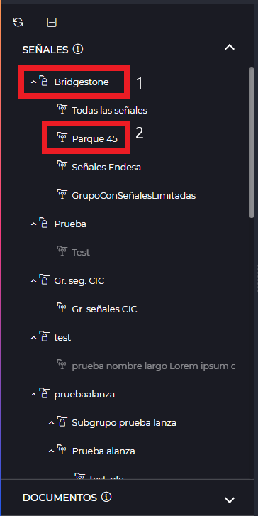
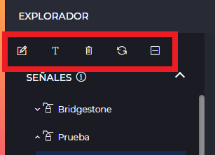
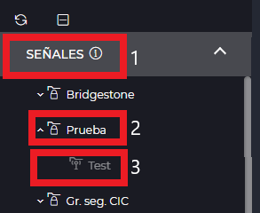
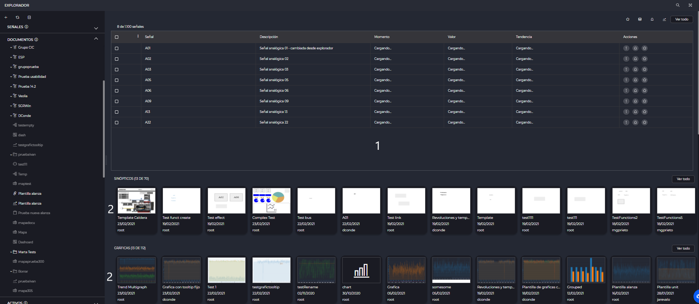
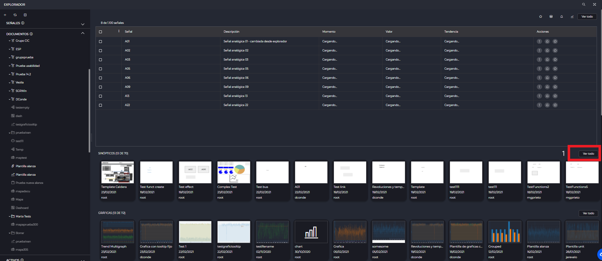
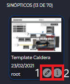
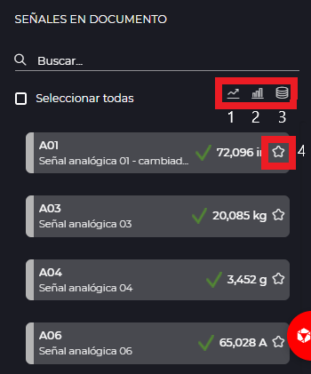
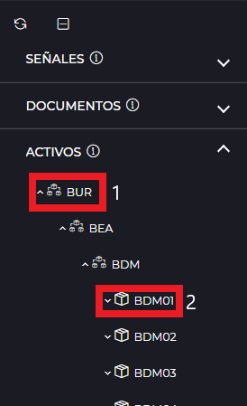
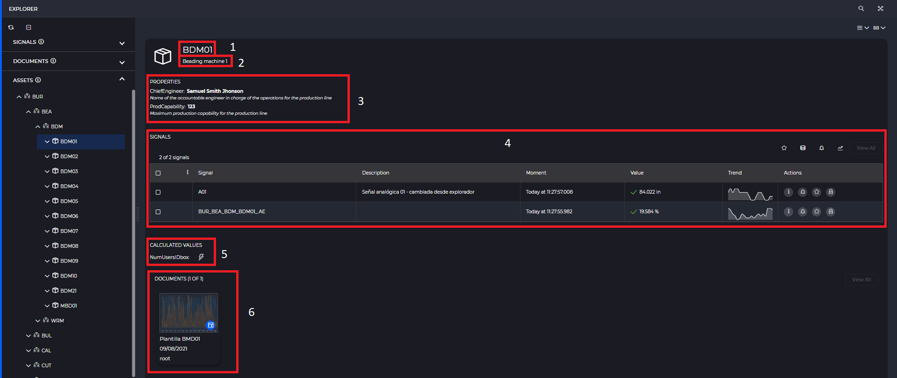

EXPLORADOR
- 1 Introducción
- 2 Grupos de señales
- 2.1 Árbol de jerarquía
- 2.2 Detalle
- 3 Documentos
- 3.1 Árbol de jerarquía
- 3.2 Detalle
- 4 Inventario
- 4.1 Árbol de jerarquía
- 4.2 Detalle
- 5 Tabla de señales de tiempo real
1. Introducción
El explorador es una de las partes principales de IDbox, además será la pantalla que el usuario visualice, en caso de que no tenga un documento como página de inciio, una vez se haya autentificado en el sistema.
Desde este podremos visualizar las jerarquías de grupos de señales, documentos de IDbox e inventario, además de poder iniciar un análisis de forma rápida y sencilla.

El acceso al explorador se realiza desde el icono presente en la barra superior.
2 Grupos de señales
Al abrir el explorador visualizaremos la jerarquía de grupos de señales de IDbox, junto con las señales asociadas al grupo de seguridad por defecto de nuestro usuario. En la parte izquierda se presenta el árbol de jerarquía de grupos de señales y en la parte central podemos observar una vista detalle.

2.1 Árbol de jerarquía
La organización de los grupos de señales se presenta en forma de árbol jerarquíco, en este, podemos encontrar todos los grupos de señales (1) disponibles para el usuario, así como los distintos grupos de seguridad (2) a los que el usuario pertenece.

Las acciones que puede realizar el usuario sobre el árbol de jerarquía de grupos de señales son las siguientes:
- Menú contextual haciendo clic derecho sobre un elemento del árbol:
- Grupo de seguridad:
- Recargar: permite al usuario recargar el elemento del árbol, recargará los elementos que culegan de él.
- Grupo de señales:
- Recargar: permite al usuario recargar el elemento del árbol, recargará los elementos que culegan de él.
- Editar: nos llevará a la pestaña de edición del grupo de señales.
- Renombrar: se habilitará la entrada de texto para que podamos modificar el nombre de grupo de señales directamente desde el explorador.
- Eliminar: elimina el grupo de señales del sistema.
- Grupo de seguridad:

- A través de la botonera de acciones presente en la parte superior del árbol, podemos realizar las mismas acciones anteriormente descritas, para ello basta con seleccionar un elemento del árbol y se habilitarán las acciones correspondientes al tipo de elemento seleccionado, ya sea grupo de seguridad o grupo de señales. Destacar que siempre tendremos presente las acciones de recargar y contraer elemento y únicamente se mostrarán las acciones de editar , renombrar y eliminar cuando seleccionemos un grupo de señales

A continuación, se detalla como visualizar las señales presentes en un grupo de seguridad o en grupo de señales en concreto, en función del tipo de elemento seleccionado en el árbol de jerarquía de señales. * Literal Señales (1): visualizaremos todas las señales asociadas a nuestro grupo de seguridad por defecto. * Grupo de seguridad (2): visualizaremos todas las señales asociadas al grupo de seguridad seleccionado. * Grupo de señales (3): visualizaremos todas las señales asociadas al grupo de señales seleccionado.

2.2 Detalle
En la parte central de explorador se mostrará una tabla de señales con tiempo real, las señales a mostrar difieren del elemento seleccionado en el árbol como se explica en el punto anterior.
3 Documentos
Desde el árbol de documentos, podemos acceder a los diferentes tipos de documentos presentes en nuestra jerarquía de IDbox.
3.1 Árbol de jerarquía
La organización de los documentos mantiene la estructura del árbol de señales, por tanto, en la raíz se visualizarán todos los documentos presentes y sobre los que tengamos acceso de nuestro grupo de seguridad por defecto, y además visualizaremos también el resto de grupos de acceso en los cuales esté asociado el usuario.
Las acciones que puede realizar el usuario sobre el árbol de jerarquía de documentos son las siguientes:
- Menú contextual haciendo clic derecho sobre un elemento del árbol:
- Grupo de seguridad:
- Recargar: permite al usuario recargar el elemento del árbol, recargará los elementos que culegan de él.
- Nueva carpeta: crea una carpeta dentro del grupo de seguridad seleccionado
- Carpeta:
- Recargar: permite al usuario recargar el elemento del árbol, recargará los elementos que culegan de él.
- Nueva carpeta: crea una carpeta dentro de la carpeta seleccionada.
- Renombrar: permite renombrar el elemento de la jerarquía seleccionado.
- Eliminar: elimina la carpeta del sistema.
- Publicar: permite modificar los grupos de acceso a los cuales está asociada la carpeta.
- Acceso directo: permite crear un acceso directo de la carpeta en el lugar de destino que el usuario seleccione.
- Documento:
- Recargar: permite al usuario recargar el elemento del árbol, recargará los elementos que culegan de él.
- Editar: abre el documento en modo edición.
- Abrir: abre el documento en modo visor.
- Nueva carpeta: crea una carpeta dentro de la carpeta seleccionada.
- Renombrar: permite renombrar el elemento de la jerarquía seleccionado.
- Eliminar: elimina la carpeta del sistema.
- Publicar: permite modificar los grupos de acceso a los cuales está asociada la carpeta.
- Acceso directo: permite crear un acceso directo de la carpeta en el lugar de destino que el usuario seleccione.
- Grupo de seguridad:
A través de la botonera de acciones presente en la parte superior del árbol, podemos realizar las mismas acciones anteriormente descritas, para ello basta con seleccionar un elemento del árbol y se habilitarán las acciones correspondientes al tipo de elemento seleccionado, ya sea un grupo de seguridad, una carpeta o un documento. Destacar que siempre tendremos presente las acciones de recargar y contraer elemento y cuando seleccionemos un documento no estarán presentes las acciones de publicar y acceso directo.
Para modificar la organización de nuestra jerarquía de IDbox, ya sea porque deseamos cambiar el orden de prioridad en el que se muestran los elementos o moverlo a otra carpeta basta con arrastrar el elemento y posicionarlo en el lugar deseado. Una vez que hayamos realizado dicha acción aparecerá en la botonera superior un nuevo icono haciendo clic en él se guardarán los cambios.
NOTA: No es posible mover un documento de un grupo de seguridad a otro.
3.2 Detalle
Al hacer clic en cualquier elemento de la jerarquía de documentos se cargará en la vista una tabla de señales con tiempo real (1), la cual muestra la señales ordenadas por frecuencia de uso y un carrusel por cada tipo de documentos, en cada carrusel los documentos se presentan ordenados por los que tienen mayor frecuencia de acceso (2). Por ejemplo: si hacemos clic en una carpeta nos mostrará las señales más frecuentemente usadas en los documentos que contiene dicha carpeta, y en el carrusel de documentos se visualizarán todos los documentos almacenados en dicha carpeta.

En el carrusel de documentos, únicamente se mostrarán los documentos que nos entren en la pantalla para ver todos los documentos asociados a un mismo tipo deberemos hacer clic en ver todo (1)

Haciendo clic en algún sobre alguno de los documentos del carrusel se abrirá dicho documento en modo visor, además al situar el cursor sobre la ficha del documento se mostrarán las siguientes acciones: * Info (1): Muestra en una panel lateral la información relativa al documento. * Abrir en modo editor (2): Abre el documento en modo editor.

Desde el panel lateral de información de documento podemos echar un vistazo rápido a cierta información asociada al documento, incluidas las señales que contiene dicho documento.

La información que se muestra es la siguientes: nombre del documento, descripción, fecha de creación, tamaño (sólo aplica a sinópticos), autor, grupo de seguridad en el cual está almacenado el documento y las señales que contiene dicho documento junto con su valor en tiempo real. Desde el apartado de señales en documentos podemos realizar un análisis rápido creando una gráfica de tendencia (1), gráfica de agrupados (2) y un documento de históricos (3) con las señales que hayamos seleccionado previamente, dicho análsis se creara con un rango temporal del último día. Además, haciendo clic en añadir a favoritos (4) podemos añadir la señal deseada al lanzador para futuros análisis.

4 Inventario
Desde el árbol de documentos, podemos acceder a los diferentes tipos de documentos presentes en nuestra jerarquía de IDbox. Mantiene la estructura del árbol de señales, por tanto, en la raíz se visualizarán todos los documentos presentes y sobre los que tengamos acceso de nuestro grupo de seguridad por defecto (1), y además visualizaremos también el resto de grupos de acceso en los cuales esté asociado el usuario (2).
4.1 Árbol de jerarquía
En activos podremos visualizar la jerarquía asociada al inventario, y las diferentes propiedades asignadas a cada uno de los activos (1) y organizadores (2). Al desplegar el árbol de invetario se mostrará la información relativa al primer activo presente en el árbol.

Las acciones que puede realizar el usuario sobre el árbol de jerarquía de activos son las siguientes:
- Menú contextual haciendo clic derecho sobre un elemento del árbol:
- Recargar: permite al usuario recargar el elemento del árbol, recargará los elementos que culegan de él.
- Nueva plantilla: Permite crear un nuevo documento de tipo plantilla. Al pulsarlo se abrirá una ventana modal para seleccionar el tipo de documento de la plantilla. Cuando se cargue la plantilla está tendrá preseleccionada la plantilla de inventario que se había seleccionado.
A través de la botonera de acciones presente en la parte superior del árbol, podemos realizar la recarga o colapsar el nodo seleccionado.
3.2 Detalle
En la parte central del explorador, se mostrará la siguiente información relativa al activo seleccionado: nombre (1), descripción (2), propiedades (3), señales asociadas (4), campos calculados (5) y las plantillas de documentos que se pueden aplicar al activo selecionado (6).

En la vista de activos tenemos distintas opciones de visualización: * Modo vista (1): * Elemento: detalle del activo/organizador seleccionado. * Contenido: visualizaremos los detalles de los organizadores/activos que contiene el activo seleccionado. * Modo categoria (2): * Sin categoría: detalle del activo/organizador seleccionado. * Con categoría: se mostrarán agrupdos por hastags las distintas propiedas y señales de los activos.
4. Tabla de señales de tiempo real
La visualización de señales junto su valor en tiempo real, siempre estará presente en el árbol de señales, documentos y activos, con la particularidad de que en activos y documentos, únicamente se nos mostrarán las primeras 10 señales y deberemos hacer clic en “Ver todo” para entrar en modo páginado, mientras que si estamos en el árbol de señales siempre se mostrará la tabla de señales en modo páginado. Cabe destacar que si estamos en modo podremos aplicar un filtro complejo. A continuación se detalla la seríe de acciones que es posible realizar desde esta sección: * Mi selección : Añade las señales actualmente seleccionadas al lanzador. * Históricos : Crea un documento de históricos con las señales seleccionadas y con un rango temporal de último día. * Suscripción : Inicia la creación de una regla de notificación con las señales seleccionadas. * Tendencia : Crea una gráfica de tendencia con las señales seleccionadas y con un rango temporal de último día. * Fijar/Liberar valor : Permite fijar o liberar un valor de tiempo real. * Filtrado : Permite realizar introducir un filtrado complejo, de manera que nos permita filtrar rápidamente las señales en función de su tipo, nombre, descripción, etc.
NOTA: la opción de introducir un filtrado complejo únicamente será visible cuando estamos en modo páginado, es decir, cuando hemos hecho clic en “ver todo” o estamos listando señales de la jerarquía de señales.